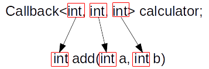

本章主要介绍NS-3的回调。它是C语言基本的函数指针的封装类。可以将回调作为参数传给某个函数，或者作为类的成员变量，然后等待在合适的时机（例如某个事件的发生、时间超时或者数据准备好后）再进行调用。NS-3中大量地使用了回调的思想来处理各种协议调用或者追踪系统等。
1. 回调的概念
回调是一种实现可扩展编程的常用手段。使用回调可以保证类和类之间的调用关系的灵活性。例如有一个类A，必须调用类C的某个方法，那么类A当中必须维护一个类C的实例，以便调用。
1 | class A { |
如果未来程序需求变化了，这个时候，出现了类B，类A也要调用其方法，那么类A此时又要维护一个类B的实例。如果以后出现类D、类E等等，则程序完全不具备可扩展性。
因此，如果类和类之间的关系仅仅是相互方法调用的关系，为了扩展可性，则可以使用函数指针来维护这些类之间的关系。此时，在A当中只需传入函数指针即可，例如（伪代码，不可直接运行）：
1 |
|
那么此时，类A已经不管自己调用的是什么类，只管调用传入进来的方法即可。类A的可扩展性已经非常高，不管出现类D、类E等等，只要传入它们当中的某个方法，类A即可调用。
2. NS-3当中的回调
以上就是回调的基本思想。但在C++当中，函数指针比单纯在C当中要复杂，其中涉及到对象当中的方法等等。因此，NS-3对普通函数、对象的方法、类的静态方法等进行了统一的封装，统一为Callback(回调)对象。除此之外，回调很多时候都是被异步调用的，因此NS-3允许在创建回调的时候，提前绑定一些参数，以便调用的时候还能使用这些参数。
回调在NS-3当中使用类Callback来表示，而普通函数和对象的方法分别使用其两个子类来表示：FunctorCallbackImpl和MemPtrCallbackImpl。除此之外，这个两个子类又延伸出了其他的子类，可以直接在回调上绑定参数，供以后使用。这些子类主要以Bound开头，例如BoundFunctorCallbackImpl和BoundMemPtrCallbackImpl。当然，如果只是单纯的使用，NS-3在实现的时候隐藏了这些细节，并提供了统一的函数MakeCallback()和MakeBoundCallback()来直接创建回调，而无需关注其背后的实现细节。
值得注意的是，在NS-3当中，一个回调可以添加最多9个参数：
1 | template<typename R, |
如果9个参数还不能满足需求，可以通过修改src/core/module/callback.h来增加更多的参数。
下面分别介绍普通函数的回调、对象方法的回调和绑定参数的回调。
2.1. 普通函数的回调
普通函数的回调是NS-3当中最简单的回调。例如，有一个函数：
1 | int add(int a, int b) { |
如果要在一个特定的时候调用这个函数，那么就必须先把这个函数的指针保存下来，等到需要的时候调用。NS-3当中，可以定义一个回调来表示这个函数：
1 | …… |
其中的calculator就是一个回调的实例，它的类型是Callback，其中使用C++的模板来表示对应函数的返回值和参数。其中第一个模板参数表示函数的返回值，其后的模板参数表示函数的参数，具体如下图所示。

然后可以使用MakeCallback()函数来创建一个回调对象。对于普通函数来说，MakeCallback()函数的参数就是一个普通的函数指针即可，如：
1 | Callback<int, int, int> callback = MakeCallback(&add); |
一旦回调绑定到一个函数之后，即可直接通过()操作符来直接调用，例如：
1 | int result = calculator(2, 3); |
下面通过完整的程序来演示回调的使用：
1 | /* -*- Mode:C++; c-file-style:"gnu"; indent-tabs-mode:nil; -*- */ |
其运行结果为：
1 | rainsia@rainsia-ubuntu-desktop:~/Applications/ns-allinone-3.27/ns-3.27$ ./waf --run "try-callback" |
在本章开头强调过，回调的最大好处在于扩展性强。不需要和具体的函数进行绑定，而可以在创建的时候动态决定到底调用那个函数。例如，此时我们不想再调用加法，而想调用乘法，那么可以给A对象实例绑定乘法操作，而无需改变A类的定义：
1 | /* -*- Mode:C++; c-file-style:"gnu"; indent-tabs-mode:nil; -*- */ |
其运行结果为：
1 | rainsia@rainsia-ubuntu-desktop:~/Applications/ns-allinone-3.27/ns-3.27$ ./waf --run "try-callback" |
如果使用传统方法，在A当中直接定义add()方法，那么必须修改A的定义为multiply()方法。而使用回调，则可以对A进行无限的扩展而无需修改A类（只要参数类型相同的函数都可以作为回调传入）。
2.2. 方法的回调
在C++当中，方法被封装在类或者对象当中，因此其使用方法和普通函数是不同的。因此，NS-3为方法回调专门创建了一个类型MemPtrCallbackImpl。这个类型也可以直接通过MakeCallback()函数来创建，和普通函数回调不同的是，创建方法的回调必须传入具体的对象，例如，有如下的复数类：
1 | class Complex { |
其中成员m_a表示复数的实数部分，而m_b表示其虚数部分。其中有一个方法add，将其结果和另外一个复数相加。并且定义了一个<<操作符来输出这个复数。
然后可以定义一个回调：
1 | Callback<Complex, Complex &> m_complexCalculator; |
来表示对复数的运算，其中第一个模板参数表示返回值是一个复数，第二个模板参数表示运算需要一个复数作为参数。要创建这个回调，还是使用MakeCallback。然而，由于复数运算的方法是封装在复数类当中的，因此创建这个回调的时候是使用对象方法的创建方法：
1 | Complex first(1, 3); |
其中first是我们创建的一个复数，而MakeCallback的第一个参数表示类的方法，第二个参数表示，在哪个对象上调用这个方法。
完整的程序如下：
1 | /* -*- Mode:C++; c-file-style:"gnu"; indent-tabs-mode:nil; -*- */ |
运行结果为：
1 | rainsia@rainsia-ubuntu-desktop:~/Applications/ns-allinone-3.27/ns-3.27$ ./waf --run "try-callback" |
可见，对象的方法的回调和普通方法的回调虽然底层表示的类是不同的，但是其创建方法是统一的，并且都可以使用Callback基类来表示。因此使用上还是很简单的。
如果此时，我们想让A当中计算两个复数的减法，而不是加法，那么只需要修改传入的回调即可，而无需修改类A：
1 | /* -*- Mode:C++; c-file-style:"gnu"; indent-tabs-mode:nil; -*- */ |
其运行结果为：
1 | rainsia@rainsia-ubuntu-desktop:~/Applications/ns-allinone-3.27/ns-3.27$ ./waf --run "try-callback" |
程序的输出部分会有小小的bug：
- 当数虚部分是负数的时候，会多出+号
- 当实数部分是0的时候，那么实数部分应该不输出，也不输出运算符号
- 当虚数部分是0的时候，那么虚数部分应该不输出，也不输出运算符号
- 当实数部分和虚数部分都是0的时候，只输出实属0
有兴趣的读者可以自行修改实现，在此不再占用篇幅。
2.3. 绑定参数的回调
上面的普通函数的回调当中，每次需要在调用的时候向回调背后的函数传入两个参数。在有的场景下，可能在创建回调的时候就已经能够确定有些参数了，每次调用回调的时候，这些参数是不用每次传入的。在这种情况下，NS-3提供了一种绑定参数的回调，可以在创建回调的时候就给回调绑定好部分参数。
例如对于上面普通函数的例子，如果我们想像复数方法一样，在创建回调的时候就确定其一个参数的值，那么可以通过如下方式实现：
1 | /* -*- Mode:C++; c-file-style:"gnu"; indent-tabs-mode:nil; -*- */ |
这个程序使用MakeBoundCallback()函数，在创建回调的时候就确定了其中一个参数的值，那么在实际调用回调的时候只需在传入一个值即可。在这种情况下，定义的回调比正常的函数要少一个参数。并且，绑定的参数，只能从第一个参数开始顺序绑定，不能跳过任何参数。例如在我们这个例子当中，绑定给回调的参数8，在调用的时候一定是作为add()函数的参数a传入的。而调用回调的时候传入的参数6,一定是作为add()函数的参数b传入的。因此，如果要使用绑定参数的回调，那么必须精心设计参数的顺序，将需要绑定的参数概率最大的尽量往前放。
对于对象的方法，由于对象本身就具有存储数据的能力，就无需绑定参数的回调这个概念。因此，NS-3当中并未提供绑定参数的对象方法的回调。
2.4. 判断回调是否绑定函数
在上面的例子当中，每次调用之前我们都保证已经给回调绑定了函数。那么，如果不给回调绑定函数就直接调用会发生什么情况？我们通过下面的例子来看看其结果：
1 | /* -*- Mode:C++; c-file-style:"gnu"; indent-tabs-mode:nil; -*- */ |
在这个例子当中，我们提供了一个默认构造函数，无需传入任何的回调，因此，calculator回调在默认情况下，不会和任何函数绑定。此时，直接调用回调，会看到如下错误：
1 | rainsia@rainsia-ubuntu-desktop:~/Applications/ns-allinone-3.27/ns-3.27$ ./waf --run "try-callback" |
其原因在于，回调并没有和任何函数绑定，直接调用回调的话，程序并不知道该如何执行。因此，在实际当中，为了保证程序的健壮性，在调用回调之前必须对回调是否绑定了实际的函数进行判断。NS-3当中，提供了方法Callback::IsNull()来判断回调是否已经绑定函数：
1 | bool IsNull (void) const { |
因此，上面的程序应该改为：
1 | /* -*- Mode:C++; c-file-style:"gnu"; indent-tabs-mode:nil; -*- */ |
此时再执行程序得到如下结果：
1 | rainsia@rainsia-ubuntu-desktop:~/Applications/ns-allinone-3.27/ns-3.27$ ./waf --run "try-callback" |
程序不再异常退出。
有时候，已经给回调绑定函数，再使用完成后，想取消绑定，则可以使用NS-3提供的MakeNullCallback()方法，将回调置空。例如：
1 | /* -*- Mode:C++; c-file-style:"gnu"; indent-tabs-mode:nil; -*- */ |
在类A当中提供了SetCalculator()方法来提供重新设置回调的机会。
第一次构造A对象的时候，传入了一个正常的回调，可以正常调用。然后构造了一个空回调，然后设置到A当中，再次调用的时候，程序能够正确判断回调为空。运行程序后得到如下结果：
1 | rainsia@rainsia-ubuntu-desktop:~/Applications/ns-allinone-3.27/ns-3.27$ ./waf --run "try-callback" |
可见，第二次调用的时候，已经发现，回调未绑定到任何函数。
3. 回调作为属性
回调除了作为参数传递给类之外，还可以作为属性来使用。NS-3专门给回调构造了一个属性值类型CallbackValue，并且实现了其访问器和检查器。其访问器和检查器和前一章介绍的内容一致，直接使用MakeCallbackAccessor()方法和MakeCallbackChecker()方法即可。而CallbackVavlue的构造函数有两种：
1 | class CallbackValue : public AttributeValue |
第一个无参构造函数将创建一个空的回调，第二个构造函数必须指定一个回调。下面的完整例子演示了回调属性的使用：
1 | /* -*- Mode:C++; c-file-style:"gnu"; indent-tabs-mode:nil; -*- */ |
例子中将之前A当中的有参构造函数删除，此时向A当中指定回调的任务现在由属性框架来完成。因此A必须继承Object类，并且实现GetTypeId()方法来使用属性框架。在GetTypeId()方法中，创建了一个属性叫做”calculator”，其绑定到了成员变量m_calculator上，属性值类型为CallbackValue。该属性默认回调值为空，使用了变量访问器和默认检查器。
在主函数当中，创建了一个A类的实例，并使用智能指针指向该实例。然后调用SetAttribute()方法为calculator属性指定一个回调。然后使用该回调。运行该程序之后得到如下结果：
1 | rainsia@rainsia-ubuntu-desktop:~/Applications/ns-allinone-3.27/ns-3.27$ ./waf --run "try-callback" |
可见回调是绑定成功了。